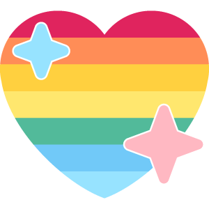

#OurPhilosophy
For anything to grow, you need three things:
Heat
Heat means work.
Upstream contributions, bug fixes, designs, docs--the rigorous work that drives the community.

Light
Light means visibility.
For the projects, contributions, opportunities, challenges, and people that impact the community.

Love
Love means culture and support.
Why we care. How we work. Actions that grow the community.